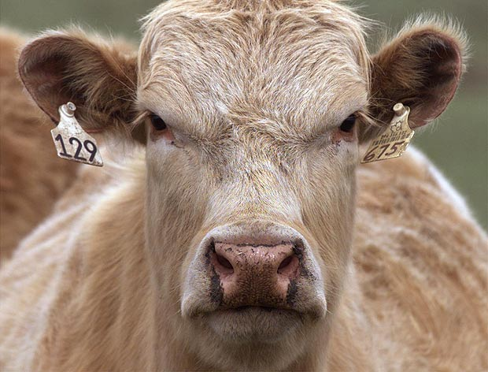

Not eating animals, you motherfucker!
Animals are not born for you to eat them. You are not a caveman any more. It's inmoral to raise animals only to torture, abuse and kill them. An empathic, morally healthy society can not tolerate the suffering of other beings, whatever they are. The livestock industry mantains a torture machine far away from your home. But the truth is out there for you to see it. Wake up.
"It's expensive" you say...
Really? Dont you notice that it is the cheese and ham in your shopping cart that populates the expensive bill? Grains, cereals, fruits, vegetables and legumes are the cheap ones.
"Animals… don't you see there are other things to be concerned of?"
Yes, indeed. What do you do to make the world a better place? The road to a better society has many paths, one of wich is veganism.
"There is simply no space to feed us all with veggies!"
Wrong, there is. Actually the agriculture industry is more efficient than livestock to produce food. So, if you care about the world nutrition, and those who won't have dinner tonight, do some research and fight against this waste of resources.
Now what? You hungry?
There is a lot of info out there to cook suffering-free food. The Buddhist Chef is full of great recipes. Enjoy!
Using free software

In this era in which so much of your life is online or related to a computer, you don't care about what is going on under the hood? OK, then send me an email with ALL your stuff, even the private stuff. "No!" you say? Well… that may be happening right now without your consent.
It does not only helps protecting you, but your friends, family or anyone you are connected to.
"Free software is crappy"
Yes, some of it. As also is some proprietary software. But here you have the chance to make it better. Help the people that makes it possible finantially or giving a sincere "thanks".